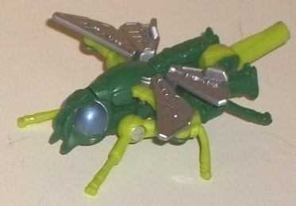
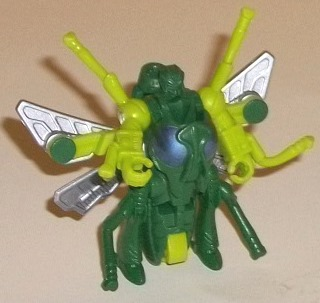
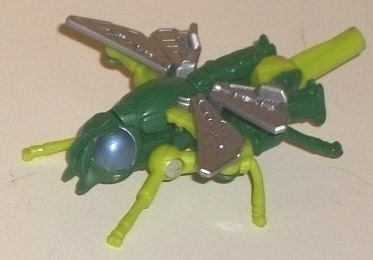
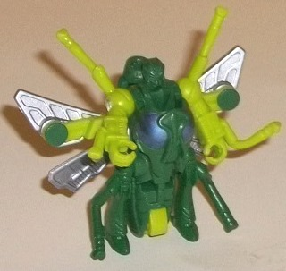
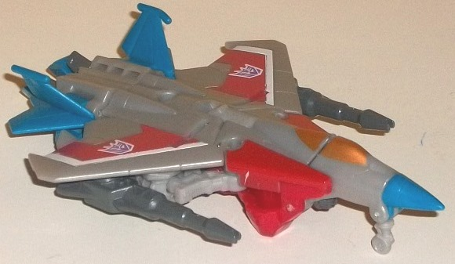
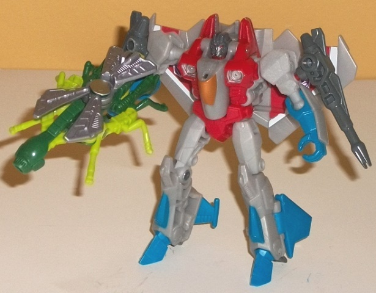

 
Allegiance : Predacon
Difficulty of Transformations : Very Easy
Color Scheme : Dark jungle green, bright green, silver, and some light metallic silvery blue
Individual Rating : 4.4
Size:
Legends 2-pack
 Waspinator
Waspinator


Allegiance
: Predacon
Difficulty of Transformations
: Very
Easy
Color Scheme
: Dark jungle green,
bright green, silver, and some light metallic silvery blue
Individual Rating
: 4.4
Well, this is definitely
the most unique out of the Legends 2-pack pairings. Starscream gets a little
Targetmaster partner of... Waspinator from Beast Wars?! It may seem odd,
until one realizes that Starscream possessed Waspinator in an episode of
"Beast Wars", and thus the connection between them both makes a little
more sense. A
little
. Anyways, Waspinator's beast mode is-- surprise!--
a wasp. The top portion generally looks pretty good, taking Waspinator's
general look from his
original form
in Beast
Wars and mechanizing it a bit, particularly in the details on the wings,
which are more angular. He's mostly made of the rubbery-feeling plastic,
thus eliminating the possibility of one of his little insect legs breaking
off easily-- and the insect legs are only a little bit tiny proportionally,
generally pulling off Waspinator's look quite well. His wasp face is also
well-sculpted, too, giving him the slightly "depressed" look he rightly
had in much of the cartoon. Waspinator does have a few robot mode extras,
though-- namely, his feet are quite visible on the rear end of this mode,
with the thorax not bulbous enough because of it-- and, on a lesser note,
Waspinator's robot arms are also quite apparent, though they're partially
covered up by his wings. The biggest issue with this mode, though-- at
least in my view-- is the lack of a diversity of colors where it's needed.
Granted, for such a small toy, Waspinator DOES have a decent enough mix
of colors-- the dark green complements and contrasts against the bright
green quite well, and the silver and silvery-blue details on the wings
and insect eyes look alright-- but he's a wasp, right? So he needs to have
the black stripes on his back end, and he doesn't. The "stinger" is also
way too bulky and flat-tipped, due to it becoming a handle for him in weapon
mode; so in general, the back half of this mode just plain looks bad.
Waspinator's weapon
mode (see Starscream's pics below) is simply made by folding his beast
mode head down and then folding his wings together, extending out the main
body section out that looks like a futuristic blaster barrel. The stinger--
as mentioned before-- forms a 5mm handle to let Starscream or other figures
with the same hand-hole sizes hold him. It's a pretty decent-looking blaster
barrel (though it could stand to use some paint), and I like the way the
wings collapse together-- but other than those bits, this mode is mighty
weak. Waspinator's robot appendages are even more obvious in this mode
than they were in wasp mode due to the wings not partially hiding them
anymore, and he's just a tad too long for most Legends-class figures to
hold effectively.
For Waspinator's robot
mode, you simply un-scissor the wings from his weapon mode and flip his
stinger the other way. Voila! Done. Despite the incredibly simple transformation,
Waspinator still comes up looking fairly accurate to his original Beast
Wars form here, what with the wasp head-chest, the arms with insect legs
on them, and the wings on the back. The mold sculpting on his tiny little
head is also done extremely well, picking out all the major details despite
how teeny it is (and his robot eyes are painted too-- on something this
small, that's a bit of a pleasant surprise). The main issue with this mode,
though, is that the abdomen doesn't really go anywhere, instead just sticking
awkwardly between his legs. This isn't as much of an issue here because
of the size, but it definitely does look weird. Waspinator can move at
this mode back-and-forth at both the shoulders and the hips, and his fist-holes
are sized perfectly for Cyberverse-scale weapons.
Waspinator is a fun,
creative little accessory for Starscream, and is definitely likely to draw
Beast Wars fans' interest. However, the toy itself is pretty mediocre even
for the size, having some major kibble issues in all three modes and an
abdomen that isn't colored correctly. It's nice to see a tiny homage to
the eternally-abused Predacon, but if you want a Waspy, I'd go for the
Generations deluxe of him out at about the same time as this toy instead.
 Starscream
Starscream


Allegiance
: Decepticon
Difficulty of Transformation
: Easy
Color Scheme
: Light flat gray, red,
moderately light sky blue, and some white, metallic bronze, silver, and
moderately dark milky gray
Individual Rating
: 7.4
Starscream's jet mode
remains roughly the same as it's always been, though a bit more streamlined
on this version with his wings, being a bit of a cross between an F-15
and an F-22. Proportionally he's generally pretty solid in this mode, with
the exception of his side guns being too large, I'm sure for safety reasons.
The tailfins (made out of rubbery plastic) could also stand to be a bit
larger. Kibble problems, however, are largely what's wrong with this mode--
this entire mode has most of Starscream's robot bits simply on the bottom,
from the chest sticking out below the cockpit, to the arms and and hands
below the wings, to the legs and feet at the back end. The most egregious
and obvious of these bits are the hands which actually stick out BEHIND
the wings as well as below them, and the feet which are blantantly below
the rear thrusters. The usual Starscream colors are all there, from the
white and red stripes on the wings (with the red a bit thicker this time),
to a fairly boring shade of light gray plastic being his main color (flat
this time, not the usual milky-- flat looks marginally better, methinks),
and some somewhat light sky blue on his rear wings and nosecone. The blue
is the bit that's slightly abnormal-- it's not completely out-of-place
on a Starscream toy, but is a bit lighter than the blue used on most other
G1-esque Starscream decoes. The bronze cockpit paint also looks quite nice.
Personally I've always thought Starscream had the dullest color scheme
out of all the Seekers, but you should likely know by now if you like Starscream's
colors or not. His mold detailing is fairly minimal here, in keeping with
the streamlined look of the vehicle, with little more than the necessary
details etched out. He's got a 5mm peg hole in the middle of the top of
this mold for holding Waspinator or another compatible partner/weapon,
and he has two null rays that peg into the sides of his arms underneath
his wings to give him some standard firepower here. He also has a fold-out
landing gear on the front end, though his robot mode parts stick out far
enough below the main jet body that only rounded hubs on his knees stand
in for "real" rear landing gear.
Starscream's transformation
is pretty darned simple, mostly consisting of standing his vehicle mode
up, separating out the legs, rotating the cockpit in to form his chest,
rotating the shoulders up, and then flipping up the wings behind him. In
robot mode, it's more obvious that this toy is meant to represent Starscream's
form in the earlier "-ation" miniseries in the IDW comics, and it replicates
that design quite well at this scale, what with the gray bits on the back
of his hands and modified wing and shoulder-intake design. It's still very
much G1 Starscream in its overall look and feel, though, with the large
wing piece behind his back, the cockpit-chest, and the turbine-like chest
details. The wings inhibit shoulder articulation a bit, but otherwise his
vehicle mode extras stay out of the way of movement-- and, of course, even
the large back wings are central to Starscream's look. His shoulders are
a tad wide and his head a tad small proportionally, but this isn't as big
of an issue for me as it otherwise would have been because of the rather
small size of the toy. His colors are a bit more broken up in this mode,
what the blue hands and feet and red chest, making him look a bit more
eye-catching than in vehicle mode. The mold detailing is quite good too,
with his little head sculpted extremely well, and unexpected areas such
as the backside/underside of his wings having quite a lot of mechanical
details on them like piping and the like. For articulation, Starscream
can move at the shoulders, elbows, hips, knees, and slightly back-and-forth
at the ankles. The first three are on ball joints, so for the size class
Starscream can get in a pretty decent number of poses. His null ray weapons
can be held in either of his hands if you push the handles all the way
in, or they can peg in a bit more loosely to his shoulders in their classic
G1 position. As you'd expect, Starscream's hand holes are also perfectly
fitted to hold 5mm weapons or little Legends 2-pack partners like Waspinator
in weapon mode.
Generations Legends
Starscream is a pretty nice replica of his G1 robot mode with a bit more
modern of a flair, but his jet mode has a pretty ridiculous amount of kibble,
with almost all of his robot mode just hanging down there beneath the wings.
Definitely the weakest "Thrilling 30" Legends mold in terms of alt mode.
The Starscream & Waspinator set, while a nice and unique idea, is honestly one of the worst of the "Thrilling 30" Legends 2-pack sets. Waspinator has some major kibble problems in all of his modes, and has a much better deluxe toy of him released at about the same time; meanwhile, Starscream has a pretty nice robot mode, and it's cool to get some toy rendition of his "early" IDW body, but the amount of kibble in vehicle mode makes him far from the best incarnation of this popular character. If you're a Waspinator or Seeker fan, this set should obviously be on your radar, just be aware of the drawbacks. If you're not either of those, this 2-pack is easily skippable.
Reviews by Beastbot